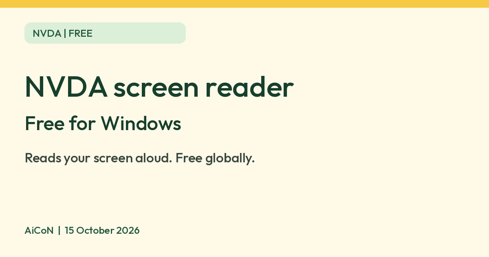

NVDA: a free screen reader for Windows
NV Access says NVDA is a free screen reader for Windows that reads the screen aloud for blind and low-vision users, free to use globally.

What it is
NVDA (NonVisual Desktop Access) is a free screen reader for Windows. A screen reader speaks what is on the screen aloud, so blind and low-vision people can use a computer. NV Access, the Australian non-profit that makes it, says NVDA lets blind and vision-impaired people use Windows and many third-party apps. It is not an AI tool. We included it because it is a free, official, widely used accessibility tool, and it is also useful for sighted people who test websites or documents for accessibility.
Is it free?
Yes. NV Access says NVDA is "100% free to use globally" and "can be downloaded free of charge by anyone". It asks for donations (in Australian dollars) before download, but the download page says it is free for everyone. NV Access also sells optional training and telephone support, which you do not need to use NVDA.
What it does
- Works with common apps: NV Access lists web browsers such as Firefox and Chrome, email clients, chat software, music players, and Microsoft Word and Excel.
- Built-in voice in over 55 languages, plus support for third-party voices.
- Braille displays: support for many refreshable braille displays.
- OCR: NV Access says it is built in, to read inaccessible PDFs and images.
- Portable: it can run from a USB stick without installing, per NV Access.
- Add-on Store and a free user guide inside the NVDA Help menu.
How to get it
- Requirements: the download page says NVDA is only for PCs running Windows 10 or later. The current version listed there is 2026.2. Older versions exist for older Windows, but NV Access does not recommend or support them on newer systems.
- Windows only. NV Access's page says nothing about Mac, Android or iPhone versions. Those platforms have their own built-in screen readers.
- Download from: https://www.nvaccess.org/download/. Use the official site only.
What to watch out for
- Learning curve. A screen reader is driven by the keyboard. NV Access offers free basic training material in its listing, and the paid modules are optional.
- Community links are not endorsed. NV Access says its community resource links are not officially endorsed.
Privacy and data
- NV Access's privacy page says the NVDA screen reader does not collect any personally identifiable information, and that collection of any information within NVDA can be disabled entirely.
- NV Access says NVDA has two options that send a small amount of information: automatic update checks and usage statistics. It says nothing NVDA reads or has access to while reading is ever sent anywhere.
- The NVDA user guide says a dialog on first start asks whether you accept sending usage data. You can change this later in settings.
India
- NV Access says NVDA is free to use globally. We did not test it from India, and we did not verify which Indian-language voices are included.
Frequently asked questions
Is NVDA free?
Yes. NV Access says it is free to use globally. Donations are optional.
Does it work on Mac or phones?
NV Access describes it only for Windows 10 and later.
Does NVDA send what I read to NV Access?
NV Access says nothing NVDA reads is ever sent anywhere.
Sources: About NVDA, Download, Privacy, Corporate and Government, NVDA 2026.2 User Guide. Checked 15 October 2026.
No NVDA logo is used in this article. Independent guide, not affiliated.